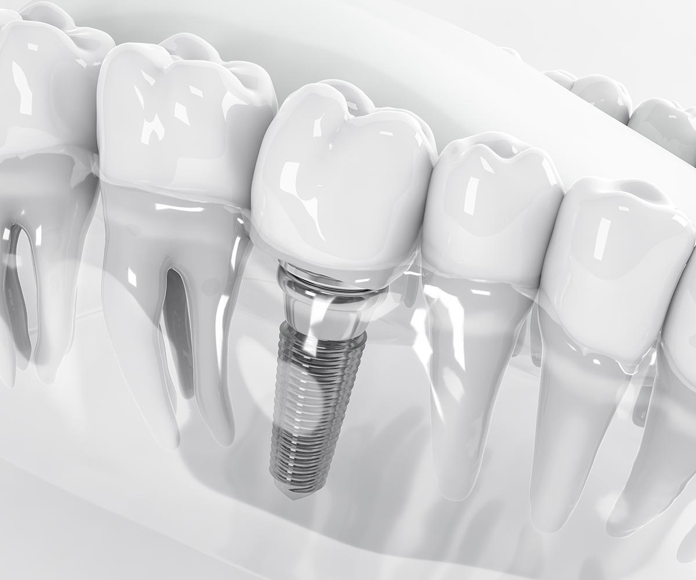
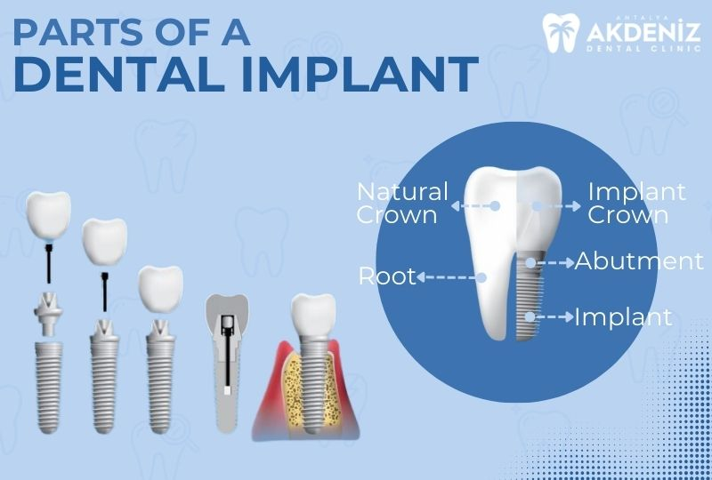
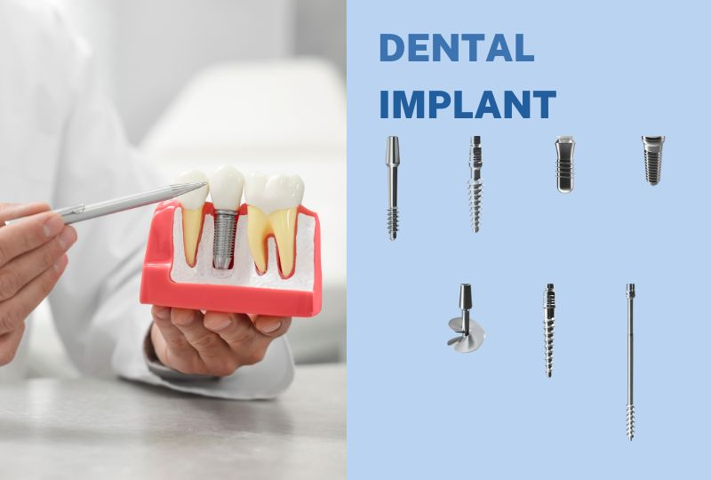
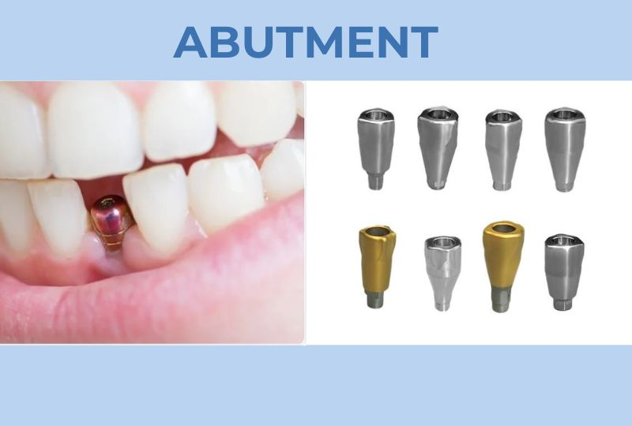
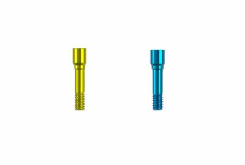
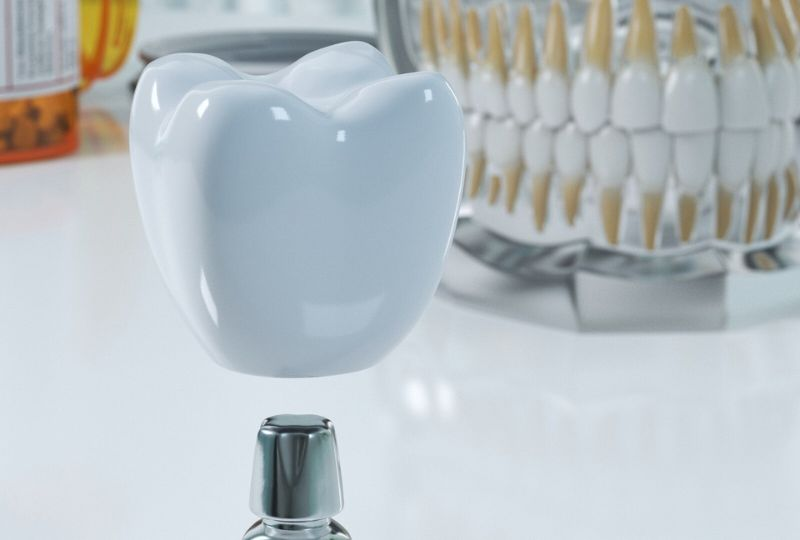
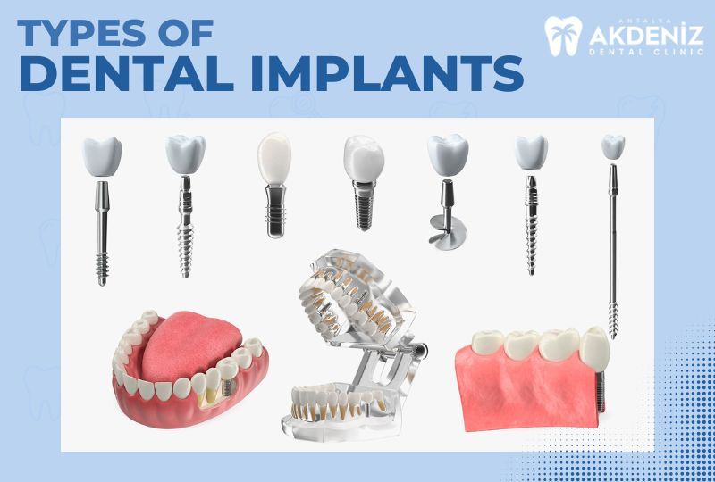

A Comprehensive Guide to a Modern Solution for Tooth Loss
Dental implants have significantly transformed the field of restorative dentistry. As a preferred tooth replacement option, they offer numerous benefits over traditional solutions.
At its core, a dental implant is a titanium post that is surgically placed into the jawbone to serve as an artificial tooth root. The implant bonds with the natural bone, forming a strong foundation for supporting the crown or artificial tooth.
The loss of one or more teeth is a sad nightmare for everyone. Neglecting proper dental hygiene and succumbing to hereditary predispositions leads us towards an inevitable outcome. Tooth loss can also occur in the event of an accident or injury. When you went to the dentist and learned that your tooth was beyond repair and needed to be extracted, did you first think, “Oh no, I will lose my tooth and its place will be empty”? Similar worries can also occur for people who have experienced tooth loss before.
However, there is no need for concern. A method exists to substitute your absent teeth. If your dentist has advised dental implants, it is time for you to become acquainted with them. Consequently, you will require comprehensive information regarding dental implants. We will provide you with all the essential information on dental implants.
What are dental implants?
Dental implants are durable and long-lasting artificial tooth roots that are placed in the jawbone to replace missing teeth or to provide support for bridges or dentures. This artificial tooth root requires additional replacement materials to resemble a natural tooth. Together with other materials, it is described as a "dental implant system."
In which cases are dental implants needed?
Dental implants can be used for any of the following conditions:
- To regain the ability to chew due to the loss of one or more teeth for any reason
- To eliminate speech disorders caused by tooth loss
- Prevention of rapid bone loss due to tooth loss
- Addressing aesthetic concerns
What Makes a Good Dental Implant System?

Since dental implants are a long-term investment in your oral and dental health, they must have the following characteristics:
- A well-known, high-quality, and internationally certified brand.
- Be of good quality and resistant to loosening, breaking, and cracking for a long time.
- It must adapt to the jawbone (be biocompatible).
- Chewing function must be fully restored.
- Look like natural teeth.
What does the dental implant system consist of?
The dental implant system includes a dental implant body, an abutment, an abutment securing screw, and a crown.
Dental implant body:

The dental implant body, an artificial tooth root, is surgically implanted into the jawbone. The dental implant's body achieves structural stability by osseointegration with the jawbone and serves as the primary support for the subsequent components. It is the fundamental and essential component of the dental implant system
Biocompatible dental implant materials include:
Titanium:
Titanium is the predominant material utilised for dental implants. It is recognised for its superior tensile strength, fracture resistance, and exceptional biocompatibility. It is lightweight and corrosion-resistant.
Titanium alloys:
Titanium is produced by alloying with aluminium and vanadium. It has high tensile strength.It exhibits biocompatibility and integrates effectively with osseous tissue. It is favoured for use in posterior teeth
Titanium-Zirconium Alloy (Roxolid):
It is an alloy of titanium and zirconium. It has higher strength than titanium, very high biocompatibility and is compatible with bone tissue.
Zirconium
Zirconium is a glassy ceramic material. Zirconium dental implants are white, which makes them more preferable for front tooth replacements. It has high iocompatibility, which makes the implant compatible with the surrounding tissues and gums.
Zirconium Ceramic:
Ceramic coatings used in the aesthetic part of dental implants support the implant's biocompatibility. Since it does not contain metal, there is no risk of allergy.
Tantalum
Tantalum is a metal with high biocompatibility and durability. It adapts well to bone. It is a material with a low risk of metal allergy.
Hydroxyapatite
Hydroxyapatite is a compound containing calcium phosphate. It coats the implant's surface, facilitating its quick and firm integration with the bone.
Acrylic:
Acrylic implants, usually made from a resin, polymethyl methacrylate (PMMA), do not last as long as zirconium. However, they are biocompatible.
Processing of dental implant body material:
The dental implant body is processed with various shaping techniques in different diameters and lengths according to the measurements taken from the patient, the density and thickness of the bone, and the area where it will be placed.
Abutment:

After the implant body is placed in the jawbone, there is a need for a support, that is, an intermediate connection, on which the artificial tooth will be placed. In short, an abutment is the connection piece that connects the artificial tooth to the implant body. They can be standard or customized.
Abutments are made of the following materials:
- Titanium,
- Gold,
- Stainless steel,
- Zirconium
- Polyether
- Other alloys
Aburment securing screw:

The abutment securing screw is designed to firmly and securely secure the abutment to the implant body. It prevents the abutment from loosening on the implant or detaching from the implant, keeping it stable. It also prevents bacteria from infiltrating the implant structure. If necessary, you can easily remove the fixing screw. When a change in the prosthetic tooth or abutment is required, these parts can be separated by removing the fixing screw.
Crowns:

They are the topmost crowns in the dental implant system, giving the appearance of natural teeth. Crowns are placed over the abutment in one of two ways.
They are the topmost filling veneers in the dental implant system and give the appearance of real teeth. There are two methods for placing crowns on the abutment.
Techniques for crown placement:
Cement-retained implant crowns:
Cemented crowns are placed on top of the abutment. Dental cement is used to permanently attach the prosthesis to the abutment.
Screw-retained dental crowns:
Crowns are placed over the abutment, secured with a fixation screw attached to the outward-facing end of the abutment.
Crown materials:
Crowns are generally made of the following materials:
Porcelain Crowns:
The translucency, durability, stain resistance, and natural tooth appearance of porcelain crowns make them preferred.
Ceramic Crowns
Similar to porcelain crowns, they are durable and resistant to wear and breakage.
Zirconium Crowns
Zirconium crowns are known for their durability. A special ceramic material forms them. Zirconium crowns are less likely to break or crack and are a suitable choice for back teeth.
Alloy crowns
They are made of alloys such as gold. They have a metal appearance. They are usually used for the back teeth.
Hybrid Crowns
It is made using different materials for durability and for aesthetics. A hybrid crown may have a zirconium core for durability and porcelain for aesthetics.
What Types of Dental Implants Are There?

Dental implant types are produced in different types according to the needs of the patient (completion of missing teeth, bridge or prosthesis needs, aesthetic needs, etc.) and the anatomical structure of the patient. These two main factors play a role in determining which type of implant to choose. The following types of implants are produced based on the aforementioned factors:
1. Endosteal Implants:
The most common type of dental implant, made of titanium, surgically placed in the jawbone.
2. Subperiosteal Implants:
It is a type of implant that is placed under the gum but not fixed to the jawbone for patients who do not have a healthy jawbone and cannot undergo bone grafting.
3. Mini Implants:
This type of implant, smaller than normal implants, is typically used to fix prostheses when bone density is low.
4. Zygomatic Implants:
When the upper jaw lacks sufficient bone, these implants attach to the cheekbone (zygomatic bone) rather than the jawbone.
What Is the Dental Implant Process in Antalya, Turkey?
Preparation for implant surgery:
Your dentist determines the need for an implant after thoroughly examining your teeth and jaw structure using various imaging methods. Your dentist will examine the implant site and assess the thickness and density of the bone. If the bone structure is not suitable for an implant, it will be determined whether additional procedures such as bone grafting or sinus lifting are necessary. Once your dentist has decided that you are suitable for a dental implant, he or she will advise you on the benefits and possible risks and complications of a dental implant.
Your dentist will gather information regarding your medical history to initiate the process. Notify your dentist of any medical conditions you possess, including cardiovascular disease, hypertension, or diabetes, and disclose any drugs you are currently on. If an illness necessitates therapy prior to implant surgery, your physician will initiate the process following the treatment.
Determining the treatment plan:
Contemporary technology enables the scanning of teeth and jawbones, the acquisition of measurements, and the execution of computer-aided modelling based on the number of teeth to be replaced by implants. Upon selecting the brand and type of your implants with your physician, a comprehensive strategy is established, and the treatment is executed in accordance with this plan.
Placement of the implant body:
At this stage, the procedures are started under local anesthesia. The gum is cut to open the place where the implant will be placed. After reaching the jawbone, a guided slot of appropriate diameter and depth is opened in the jawbone for the placement of the implant body using special surgical instruments. The implant body is placed into the slot. The gums are then closed, and the healing process is expected. The healing process varies between 3-6 months depending on the patient's bone structure and health status. During this period, the implant body integrates with the jawbone (osseointegration).
Placement of the abutment:
After making sure that the body of the dental implant is fused with the jawbone, the gingiva is reopened, and the abutment is placed on the implant body. After the abutment is placed, the gum around the abutment is allowed to heal. During this time, the gum around the abutment starts to heal and gains a natural appearance. . This healing process usually takes 1-2 weeks.
Placement of the prosthetic tooth:
After making sure that the gingiva has healed after the abutment is placed, a prosthetic tooth (fixed or removable) is placed on the abutment.
Proofing:
To ensure the fit and aesthetics of your prosthesis, you may need a few fittings after placement. After the fittings, your dental implant will be adjusted to you.
Check-ups and care:
After the implant treatment is completed, you should go for regular check-ups according to the plan your doctor will give you. During these check-ups, the condition of the implant and the fit of the prosthesis are evaluated. You should follow your doctor's recommendations to make your dental implant last longer.
Dental Implants in Antalya, Turkey: FAQs
What is the duration required to create the slot in the jawbone and position the implant body?
The duration for each implant may range from 30 to 60 minutes. The placement of many implants may prolong the duration of the process.
How long does it take to attach the abutment to the implant body?
This procedure usually takes less than 1 hour.
What is the maximum duration after initiating the dental implant procedure before it is completely functional?
The duration from the initiation of dental implant application to the conclusion of rehearsals is contingent upon the patient's condition. This duration is a maximum of 6 to 7 months.
Are there any risks associated with dental implants?
Risks may vary according to the general health status of the person. There are some risks, albeit very small. These are:
- Infection in the jawbone
- Gingival recession and inflammation
- Failure of the implant to fuse to the bone (osseointegration problem)
- Damage or fracture of the jawbone during surgery
- Allergic reaction to the implant material
- Nerve damage during implant placement
- Damage to the sinus cavity by the implant
If there is not enough thickness or density in the mandible, how is the implant done?
In this case, a bone graft is applied. To fill in the missing bone, either add bone powder to the jawbone or transplant bone from another area.
What is the procedure for implant placement when there is insufficient height or density in the upper jawbone?
In this instance, sinus lifting is executed. The inferior segment of the sinus membrane is elevated, and a bone transplant is introduced into the resultant cavity. This increases bone height in the maxilla and readies the site for implant insertion.
Is there any pain during dental implant surgery?
The patient does not feel pain during the procedure because they are under local anesthesia, but they may feel some slight pressure or vibration.
Is there pain after dental implant surgery?
After the anaesthesia wears off, mild pain and tenderness may be felt, and the pain may last for a few days. In this case, your doctor will give you pain medication.
Is there oedema or trauma following dental implant surgery?
Such complications may occur post-surgery. These difficulties will diminish within a few days. Utilising cold compresses can alleviate swelling and discomfort.
Can daily activities continue after dental implant surgery?
After the surgery, you should rest as much as possible for the first 24 hours. The next day, non-heavy daily activities can be carried out carefully. Avoid heavy exercises and intense physical activities for the first few days. Sleeping on your back with your head elevated for the first few nights will help reduce swelling.
What factors should be taken into consideration when using a dental implant for an extended period of time?
- Follow your dentist's advice exactly.
- Go for regular dental checkups.
- If you notice symptoms such as pain, swelling, bleeding, or redness around theimplant, contact your dentist immediately.
- Maintain oral hygiene.
- Reduce or stop smoking and alcohol consumption.
- Eat a balanced diet and avoid hard foods.
- Avoid excessive clenching and grinding.
- Floss regularly or usea soft-bristled toothbrush.
How long does a dental implant last?
The average lifespan of a dental implant is 15-20 years, but this period can be extended with careful use and maintenance.
Are there any alternatives to dental implants?
Dental bridges and partial or full dentures can be preferred.
Who cannot get dental implants?
There may be various risks for those with the following problems to have dental implants.
- People with jaw joint problems
- People who cannot provide sufficient bone space even with procedures such as bone grafting or sinus lifting
- Young people under 18 years of age with incomplete bone development,
- Those with unfavorable gum health,
- People with uncontrolled chronic diseases (heart, high blood pressure, diabetes, etc.)
- People undergoing cancer treatment, people with immune system diseases such as HIV/AIDS or people using immunosuppressive drugs
- Those with excessive alcohol or substance abuse
But you may ask, "What makes dental implants superior to other tooth replacement options?"
The unique benefit of dental implants lies in their ability to maintain and
stimulate natural bone growth. This feature is crucial in preventing bone loss
in the jaw. Furthermore, dental implants provide unrivalled stability for
artificial teeth, ensuring comfort and confidence for the wearer.
Another common question is, "What is the success rate of dental
implants?"
Dental implants have a high success rate, often surpassing 95%. This can
be attributed to their design and the materials used, which are biocompatible
and well accepted by the body.
Spread the Cost of Your Treatment with Monthly Payments
Planning your treatment in Antalya? Learn how you can finance your dental treatment through Ideal4Finance with tailored monthly repayment options.